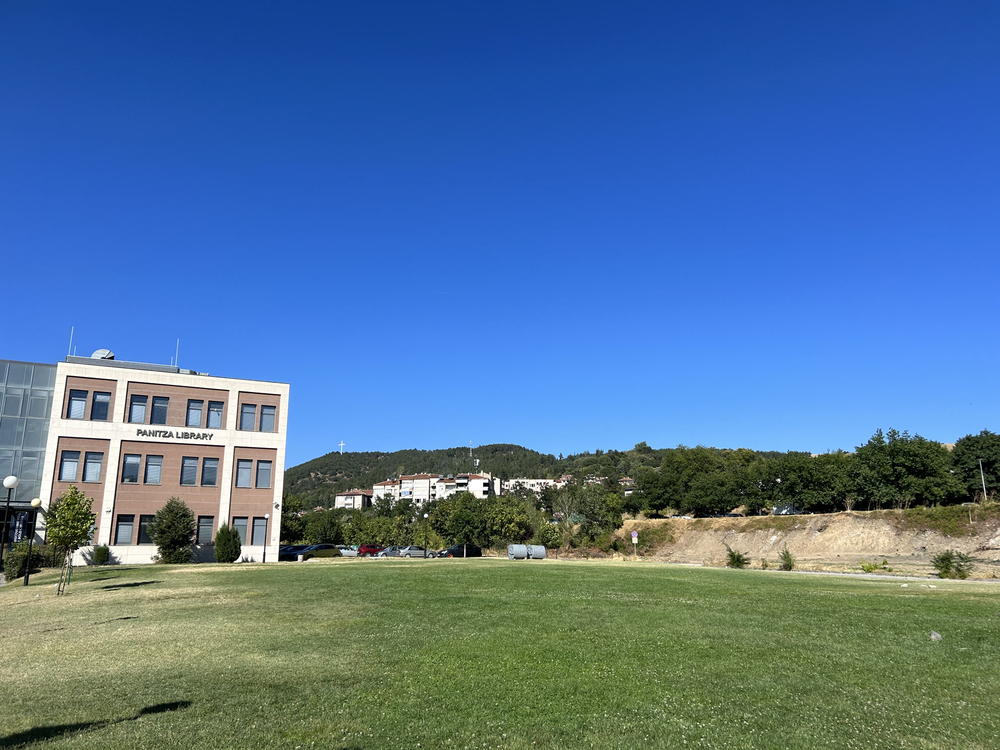
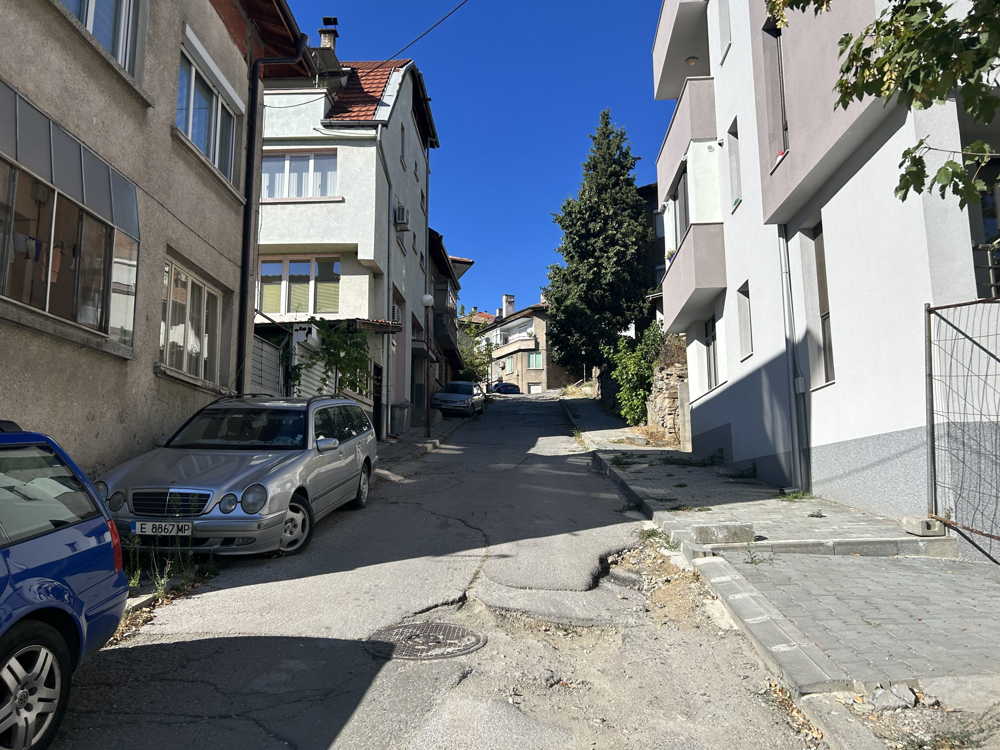
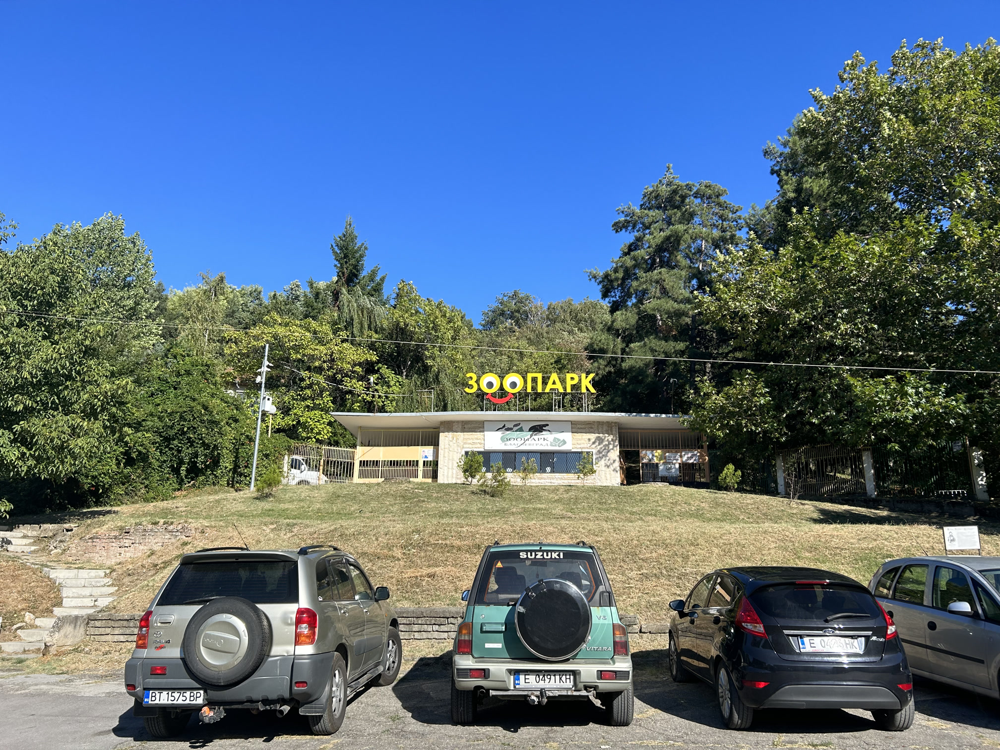
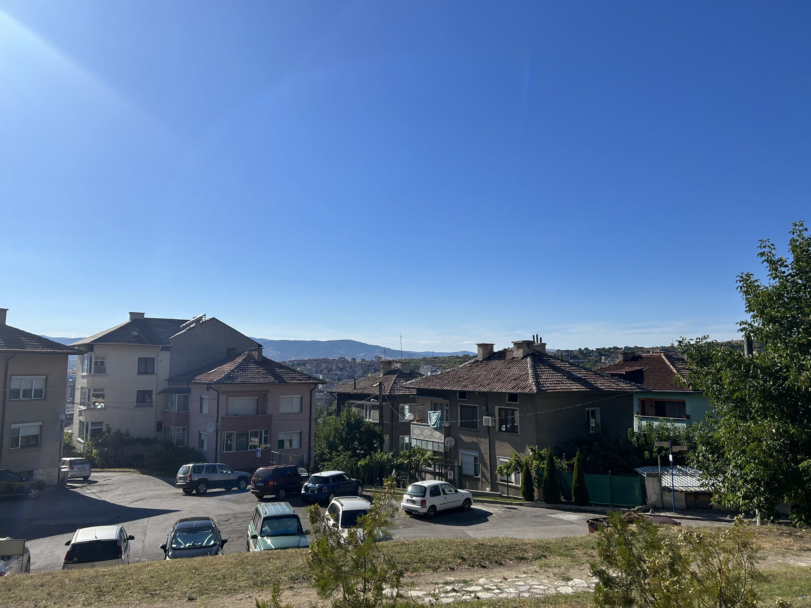
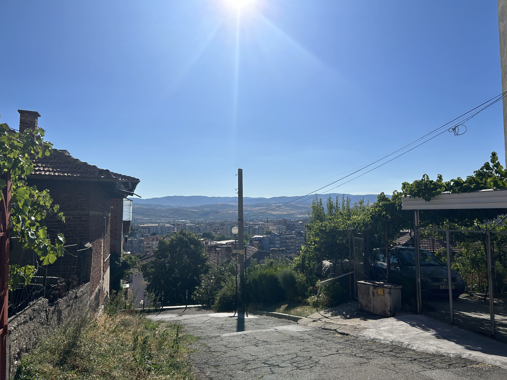

早上 6 点 10 分醒来，吃完早饭后直奔考场。AUBG 教学楼的内部结构较为复杂，需要靠标识指引才能找到具体教室。同一考场有考生未饮用咖啡且当时未携带当地货币现金，我立马去了一楼的咖啡铺给他买了一杯，且告诉他，无需还钱！对于习惯于咖啡因的人来说，在不喝咖啡的情况下进行持续高强度消耗脑力的数学竞赛，是一种非常影响发挥的煎熬——就像熬夜写作业的第二天早自习数学考试一样，我初中有一次真的睡着过（虽然后来还是雷打不动的班级第一）。
Woke up at 6:10 AM. Headed straight to the exam venue after breakfast. The teaching building of AUBG has a considerably complex structure, and the specific venue could only be found by different signs. There was a student in the same venue without drinking coffee nor any cash, and I immediately went back to the ground floor to buy them one cup without telling them anything about money. Those adapted to caffeine could significantly suffer from not having coffee before marathon-like brain-consuming events such as mathematical competitions. It is just like staying up very late the day before a math exam, and I even fell asleep during the exam once in middle school, although in that case, I was still ranked the first in my class.
考试开始时间是上午 8 点，但几十分钟后才见到试卷的身影——是 John Jayne 教授亲手发试卷。原本五个小时的考试时间因此延长，但这种超长考试时间在学科竞赛领域极其常见。
The exam started at 8 AM, but we didn't get the paper, which was handed out by Professor John Jayne, until tens of minutes later. Thus the 5-hour time limit was extended, although such super-long exam periods are very common in the fields of similar competitions.
看一下题（为配合原生 HTML 糟糕的数学符号表示方法，题目进行了转述）：
The problems are as follows:
1. 找出所有复平面以原点为中心的单位圆上的有序点对 (a, b)，使得 a + b + a/b 为实数．
2. 对于正整数 n ，令 S_n = ln (1^1 * 2^2 * ... * n^n)^(1/(n^2)) - ln (n^(1/2)) ，求 n 趋于正无穷时 S_n 的极限．
3. 哪些正整数 n 满足以下性质：存在 n 行 n 列矩阵 A，其元素要么是 0 要么是 1，且 A^2 的元素全是 1？
4. 令 g, h 为群 G 中的不同元素，n 为正整数．考虑非周期序列 w = (w_1, w_2, ...)，其中对任一正整数 i，w_i 要么是 g 要么是 h．令 H 为 G 的子群，其元素均由具有 (w_k)(w_(k+1))...(w_(k+n-1)) （k 为正整数）形式的元素生成．证明：H 与 w 的选择无关．
5. 令 n > d 为正整数．随机选择 d 维实数空间以原点为中心的单位球 B 内的 n 个独立且均匀分布的点 x_1, ..., x_n．对于 B 内的点 p，令 f(p) 为 x_1, ..., x_n 形成的凸包包含 p 的概率．证明：如果点 p, q 都在 B 内，且 p 与原点的距离小于 q 与原点的距离，那么 f(p) >= f(q)．
For original English version, please see IMC Official Site.
可以看到，题目相对往年较简单——第一道题甚至可以完全用高中知识解决。虽然如此，我只做出了前两道，且第二道题遗漏了负号。
It can be seen that these problems are overall easier than those of previous years, of which the first problem could be solved by high school students. Despite that, I only solved the first and second questions, and missed a minus sign when answering the second question.
考完试后，大家回到了生活区，吃了午饭。明天还有五个小时的考试，但与其进行意义不大的临阵磨枪，我更想享受外面无尽的阳光与蓝天。火车就那样，附近还有哪里？看一下地图，山顶上有动物园！
We went back to Skaptoparas and had lunch after the exam. There was another five-hour exam tomorrow, but I wanted to enjoy endless sunshine and blue sky outside rather than rescue reviewing. There is nothing exciting about railway, so where can I go around? Seeing the map, there is a zoo on the top of the hill!
下午五点钟，太阳依然高挂，我从生活区出发向东走，上坡，看到了尾部喷着黑烟、在国内肯定过不了年检的私家车，不一会儿就到了顶端。由于对动物不感兴趣，我并未进入园内。登高望远的感觉极好，虽然布拉戈耶夫格勒并没有什么天际线可看。很多人住在山坡上，小时候我把他们说成“住在月亮上”；电线杆上满是去世的人的讣告，这是保加利亚的文化特色。
The sun was still bright at 5 PM, when I departed eastward from Skaptoparas. Climbing up along the road, there was a car puffing black smoke, which could never pass the "annual vehicle check" in China. The top was reached in several minutes, but I didn't go into the zoo due to lack of interest on animals. The feel of climbing and birdseeing was very good, although Blagoevgrad has barely any skyline to see. Many people live up the hill, whom I used to say "living on the moon". There is plenty of paper sticking anywhere noticing about deaths, which could be a culture specific to Bulgaria.





再次回到生活区；华为和 Pinely 依然在摆摊，摊位上有很多零食。明天还有一天，希望能获奖！
Back to Skaptoparas again. There were still stands offering snacks by Huawei and Pinely. But more importantly, there is another exam tomorrow. Hope I can get some prize!
TOP | 1 | 2 | 3 | 4 | 5 | 6 | 7